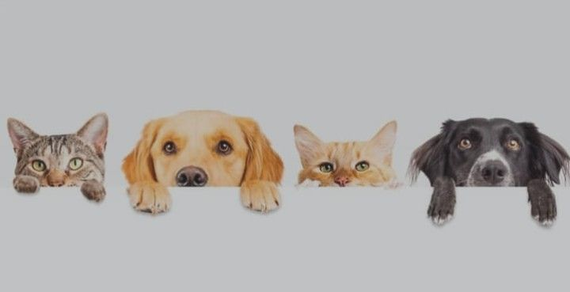

A Aumiigão conecta pessoas que amam animais com causas que realmente fazem a diferença. Nosso site funciona como uma ponte entre doadores, voluntários e protetores independentes. Aqui, você pode conhecer histórias de animais resgatados, descobrir campanhas em andamento e contribuir com doações ou tempo voluntário. Tudo é feito de forma transparente e segura, garantindo que cada ajuda chegue a quem mais precisa — os nossos amigos de quatro patas.
O projeto Aumiigão foi criado para dar visibilidade aos animais abandonados e incentivar a adoção responsável. Além disso, servimos como um canal de apoio para arrecadar recursos, divulgar eventos de adoção e promover ações educativas sobre cuidado e bem-estar animal. Nosso objetivo é unir pessoas e transformar vidas — uma patinha de cada vez 🐾
Projeto de Resgate: Resgate de animais em situação de risco nas ruas.
Projeto de Adoção: Facilitação do processo de adoção responsável.
Projeto de Castração: Campanhas de castração para controle populacional.
Projeto Educativo: Programas de conscientização sobre cuidados com os animais.
Seja voluntário, faça uma doação ou adote um amigo peludo. Cada ação conta! Faça a Diferença na Vida dos Animais
Participe dos nossos projetos e ajude a fazer a diferença na vida desses animais!
Faça seu cadastro e participe. Você pode contribuir como voluntário, doador ou adotante. Entre em contato conosco para saber mais!
Juntos, podemos transformar vidas!
Endereço:📍Rua Animalia, 007 Bairro Catoo - São Paulo
Telefone:☎️(11)99999-9999
Email:📧contato@organizacaoaumiigao.org.br